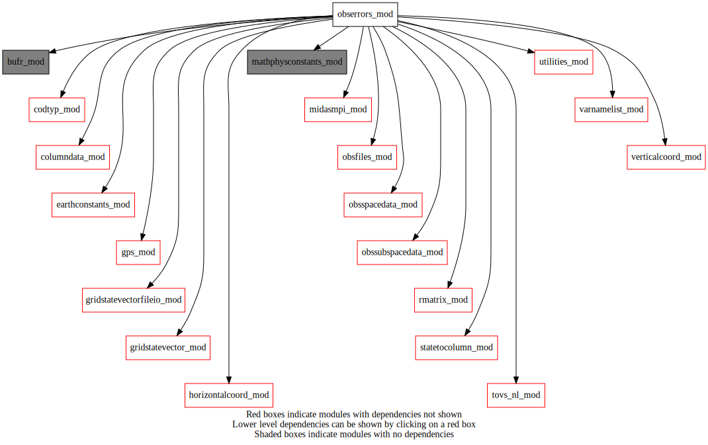
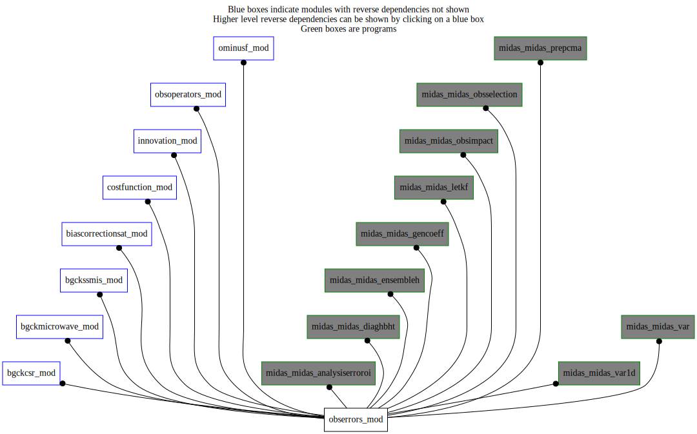

Dependency Diagrams:
 Direct Dependency Diagram¶
 Reverse Dependency Diagram¶
Description
MODULE obsErrors_mod (prefix=’oer’ category=’2. B and R matrices’)
- Purpose
Subroutines to set up the observation-error standard deviations.
Quick access
- Types
- Variables
oer_ascatanisice,oer_ascatanisopenwater,oer_cldpredthresh,oer_errthreshallsky,oer_toverrst,oer_tovutil,oer_usestatedepsigmaobs- Routines
chanisallsky(),chm_dealloc_obs_err_stddev(),chm_get_obs_err_stddev(),chm_obs_err_stddev_index(),chm_read_obs_err_stddev(),chm_read_obs_err_stddev_file(),get_height_error(),oer_fillobserrors(),oer_getsstdataparam_char(),oer_getsstdataparam_int(),oer_getsstdataparam_r8(),oer_inflateerrallsky(),oer_readobserrorsconv(),oer_readobserrorshydro(),oer_readobserrorsice(),oer_readobserrorssst(),oer_readobserrorstovs(),oer_seterrbackscatanisice(),oer_seterrgpsgb(),oer_seterrgpsro(),oer_setinterchancorr(),oer_setobserrors(),oer_sw(),readoerfromobsfileforsw()Needed modules
midasmpi_mod: MODULE midasMpi_mod (prefix=’mmpi’ category=’8. Low-level utilities and constants’)
mathphysconstants_mod: MODULE MathPhysConstants_mod (prefix=’mpc’ category=’8. Low-level utilities and constants’)
obsspacedata_mod: MODULE obsSpaceData_mod (prefix=’obs’ category=’6. High-level data objects’)
obssubspacedata_mod: MODULE obsSubSpaceData_mod (prefix=’oss’ category=’6. High-level data objects’)
tovs_nl_mod: MODULE tovs_nl (prefix=’tvs’ category=’5. Observation operators’)
codtyp_mod: MODULE codtyp_mod (prefix=’codtyp’ category=’8. Low-level utilities and constants’)
bufr_mod: MODULE bufr_mod (prefix=’bufr’ category=’8. Low-level utilities and constants’)
utilities_mod: MODULE utilities_mod (prefix=’utl’ category=’8. Low-level utilities and constants’)
earthconstants_mod: MODULE earthConstants_mod (prefix=’ec’ category=’8. Low-level utilities and constants’) Prefixes: ec_ (Earth constants), for miscellaneous values from diverse sources
gps_mod: MODULE gps_mod (prefix=’gps’ category=’5. Observation operators’)
horizontalcoord_mod: MODULE HorizontalCoord_mod (prefix=’hco’ category=’7. Low-level data objects’)
verticalcoord_mod: MODULE verticalcoord (prefix=’vco’ category=’7. Low-level data objects’)
columndata_mod: MODULE columnData_mod (prefix=’col’ category=’6. High-level data objects’)
gridstatevector_mod: MODULE gridStateVector_mod (prefix=’gsv’ category=’6. High-level data objects’)
gridstatevectorfileio_mod: MODULE gridStateVectorFile_mod (prefix=’gio’ category=’4. Data Object transformations’)
rmatrix_mod: MODULE rMatrix_mod (prefix=’rmat’ category=’2. B and R matrices’)
varnamelist_mod: MODULE varNameList (prefix=’vnl’ category=’7. Low-level data objects’)
obsfiles_mod: MODULE obsFiles_mod (prefix=’obsf’ category=’3. Observation input/output’)
burp_module
rttov_const(surftype_sea())
statetocolumn_mod: MODULE stateToColumn (prefix=’s2c’ category=’4. Data Object transformations’)Types
- type obserrors_mod/sstdataparamstype¶
- Type fields
% codetype [integer ] :: data codtype
% datatype [character ] :: type of data: insitu, satellite, pseudo
% dayerror [real ] :: data error for daytime
% instrument [character ] :: instrument: drifts, bouys, ships, AVHRR, VIIRS, AMSR2
% nighterror [real ] :: data error for nighttime
% sensor [character ] :: sensor of satellite data: NOAA19, NOAA20,…
% sensortype [character ] :: type of satellite data sensors: infrared, microwave,..
- type obserrors_mod/unknown_type¶
- Type fields
% element (*) [integer ,allocatable]
% ibegin (*) [integer ,allocatable]
% lat (*) [real ,allocatable]
% levels (*) [real ,allocatable]
% n_lat (*) [integer ,allocatable]
% n_lvl (*) [integer ,allocatable]
% n_stnid [integer ]
% obsstddev (*) [struct_oss_obsdata ,allocatable]
% source (*) [integer ,allocatable]
% std1 (*) [real ,allocatable]
% std2 (*) [real ,allocatable]
% std3 (*) [real ,allocatable]
% std_type (*) [integer ,allocatable]
% stnids (*) [character ,allocatable]
Variables
- obserrors_mod/oer_ascatanisice (21,12) [real,public]¶
- obserrors_mod/oer_ascatanisopenwater (21,12) [real,public]¶
- obserrors_mod/oer_cldpredthresh (tvs_maxchannelnumber,tvs_maxnumberofsensors,2) [real,public]¶
- obserrors_mod/oer_errthreshallsky (tvs_maxchannelnumber,tvs_maxnumberofsensors,2) [real,public]¶
- obserrors_mod/oer_toverrst (tvs_maxchannelnumber,tvs_maxnumberofsensors) [real,public]¶
- obserrors_mod/oer_tovutil (tvs_maxchannelnumber,tvs_maxnumberofsensors) [integer,public]¶
- obserrors_mod/oer_usestatedepsigmaobs (tvs_maxchannelnumber,tvs_maxnumberofsensors) [logical,public]¶
Subroutines and functions
- subroutine obserrors_mod/oer_setinterchancorr()¶
- Purpose
Setup of interchannel observation errors correlations
Needed modules
rmatrix_mod: MODULE rMatrix_mod (prefix=’rmat’ category=’2. B and R matrices’)
- Called from
- Call to
- subroutine obserrors_mod/oer_setobserrors(obsspacedata, obserrormode_in[, usetovsutil_opt])¶
- Purpose
read and set observation errors (from former sucovo subroutine).
- Arguments
obsspacedata [struct_obs ]
obserrormode_in [character ,in]
- Options
usetovsutil_opt [logical ]
- Called from
omf_ominusf(),omf_ominusfens(),midas_analysiserroroi,midas_diaghbht,midas_ensembleh,midas_gencoeff,midas_letkf,midas_obsimpact,midas_obsselection,midas_prepcma,midas_var,midas_var1d- Call to
utl_isnamelistpresent(),utl_abort(),obs_famexist(),oer_readobserrorstovs(),oer_readobserrorsconv(),chm_read_obs_err_stddev(),oer_readobserrorsice(),oer_readobserrorssst(),oer_readobserrorshydro(),oer_fillobserrors(),chm_dealloc_obs_err_stddev()
- subroutine obserrors_mod/oer_readobserrorstovs()¶
- Purpose
Read the observation error statistics and utilization flag for TOVS processing. This information resides on an ASCII file and is read using a free format.
- Called from
- Call to
utl_abort(),tvs_getplatformid(),tvs_getinstrumentid(),utl_findarrayindex()
- subroutine obserrors_mod/oer_readobserrorsconv()¶
- Purpose
read observation errors (modification of former readcovo subroutine) of conventional data
- Called from
- Call to
- subroutine obserrors_mod/oer_readobserrorsice()¶
- Purpose
read observation errors for sea ice concentration analysis
- Called from
- Call to
- subroutine obserrors_mod/oer_readobserrorssst()¶
- Purpose
read observation errors for SST data
- Called from
- Call to
- subroutine obserrors_mod/oer_readobserrorshydro()¶
- Called from
- Call to
- subroutine obserrors_mod/oer_fillobserrors(obsspacedata)¶
- Purpose
fill observation errors in obsSpaceData
- Arguments
obsspacedata [struct_obs ]
- Called from
- Call to
obs_numheader(),obs_headelem_i(),obs_getfamily(),obs_headelem_r(),obs_elem_c(),tvs_changedstypvalue(),obs_bodyelem_i(),obs_bodyelem_r(),tvs_mapsat(),tvs_mapinstrum(),obs_bodyset_i(),codtyp_get_codtyp(),utl_abort(),chm_get_obs_err_stddev(),tvs_isinstrumallskyttassim(),tvs_isinstrumallskyhuassim()
- subroutine obserrors_mod/oer_inflateerrallsky(obsspacedata, bodyindex, ompomaobscolumn[, besilent_opt])¶
- Purpose
Update OBS_OER with inflated state dependant observation error for all-sky temperature/humidity assimilation.
- Arguments
obsspacedata [struct_obs ,inout]
bodyindex [integer ,in]
ompomaobscolumn [integer ,in] :: obsSpaceData OBS_OMP or OBS_OMA column
- Options
besilent_opt [logical ,in,] :: prints extra info to listing if .true.
- Called from
- Call to
obs_bodyelem_i(),tvs_getchannelnumindexfromppp(),tvs_changedstypvalue(),chanisallsky(),obs_headelem_r(),obs_bodyelem_r()
- subroutine obserrors_mod/chanisallsky(obsspacedata, bodyindex, chanisallskytt, chanisallskyhu)¶
- Purpose
Determine if the tovs instrument/channel combination is all-sky.
- Arguments
obsspacedata [struct_obs ,in]
bodyindex [integer ,in]
chanisallskytt [logical ,out] :: .true. if channel is all-sky temperature
chanisallskyhu [logical ,out] :: .true. if channel is all-sky humidity
- Called from
- Call to
obs_bodyelem_i(),tvs_getchannelnumindexfromppp(),tvs_isinstrumallskyttassim(),tvs_isinstrumallskyhuassim(),utl_abort()
- subroutine obserrors_mod/readoerfromobsfileforsw(obsspacedata)¶
- Purpose
Read observation errors for AMVs from the obsFiles so as to use the values computed by a previous MIDAS execution (e.g. GDPS).
- Arguments
obsspacedata [struct_obs ]
- Called from
- Call to
obsf_getfilename(),obs_numheader(),obs_getfamily(),obs_headelem_i(),obs_bodyelem_i()
- subroutine obserrors_mod/oer_sw(columntrlontrllev, obsspacedata)¶
- Purpose
Calculate observation errors for AMVs according to the Met-Office situation dependant approach.
- Arguments
columntrlontrllev [struct_columndata ]
obsspacedata [struct_obs ]
- Called from
- Call to
readoerfromobsfileforsw(),obs_bodyelem_i(),obs_bodyelem_r(),obs_headelem_i(),obs_headelem_r(),obs_elem_c(),get_height_error(),vnl_varlevelfromvarnum(),vnl_varnamefromvarnum(),col_getcolumn(),col_getpressure(),col_getnumlev()
- subroutine obserrors_mod/get_height_error(stnid, methode, terrain, htasmet, zlat, zlev, e_height, j_sat)¶
- Arguments
stnid [character ,in]
methode [integer ,in]
terrain [integer ,in]
htasmet [integer ,in]
zlat [real ,in]
zlev [real ,in]
e_height [real ,out]
j_sat [integer ,out]
- Called from
- subroutine obserrors_mod/oer_seterrgpsro(columntrlontrllev, obsspacedata, besilent)¶
- Purpose
Compute estimated errors for GPSRO observations
- Arguments
columntrlontrllev [struct_columndata ]
obsspacedata [struct_obs ]
besilent [logical ]
- Called from
- Call to
col_getnumlev(),obs_getheaderindex(),obs_headelem_i(),obs_bodyelem_i(),gps_iprofile_from_index(),obs_headelem_r(),col_getheight(),gps_gravitysrf(),col_getelem(),col_getpressure(),gps_struct1sw_v2(),obs_bodyelem_r(),gps_bndopv1(),gps_refopv(),utl_abort()
- subroutine obserrors_mod/oer_seterrgpsgb(columntrlontrllev, obsspacedata, besilent, ldata, analysismode)¶
- Purpose
Set the observation errors [OBS_OER] and Std(O-P) [OBS_HPHT] for GB-GPS ZTD data. (GPS surface met obs errors are set before in observation_erreurs_mod.ftn90. The ZTD error is also initialized to the “formal error” or to 1.0 if missing.)
Returns ldata=.false. if there are no GPS ZTD data to assimilate and also sets the modgpsztd_mod variable gps_gb_numZTD = 0.
- Arguments
columntrlontrllev [struct_columndata ]
obsspacedata [struct_obs ]
besilent [logical ]
ldata [logical ]
analysismode [logical ]
- Called from
- Call to
col_getnumlev(),obs_getheaderindex(),obs_headelem_i(),col_getelem(),col_getheight(),obs_bodyelem_i(),obs_bodyelem_r(),utl_abort()
- subroutine obserrors_mod/oer_seterrbackscatanisice(obsspacedata, besilent[, columntrlontrllev_opt])¶
- Purpose
Compute estimated errors for ASCAT backscatter anisotropy observations
- Arguments
obsspacedata [struct_obs ]
besilent [logical ,in]
- Options
columntrlontrllev_opt [struct_columndata ]
- Called from
- Call to
obs_getheaderindex(),obs_bodyelem_i(),col_getelem(),hco_setupfromfile(),vco_setupfromfile(),gsv_allocate(),gsv_zero(),gio_readfromfile(),col_setvco(),col_allocate(),obs_numheader(),s2c_nl(),gsv_deallocate(),obs_headelem_i(),col_deallocate()
- subroutine obserrors_mod/chm_read_obs_err_stddev()¶
- Purpose
To read observation errors from auxiliary file or observation file.
- Called from
- Call to
- subroutine obserrors_mod/chm_read_obs_err_stddev_file()¶
- Purpose
To read and store observation error std. dev. as needed for CH family obs.
- Called from
- Call to
- subroutine obserrors_mod/chm_obs_err_stddev_index(cstnid, nlev, varno, zlat, istnid, jint)¶
- Purpose
To return the station ID and latitude indices corresponding to a measurement.
- Arguments
cstnid [character ,in]
nlev [integer ,in]
varno [integer ,in]
zlat [real ,in]
istnid [integer ,out]
jint [integer ,out]
- Called from
- Call to
- function obserrors_mod/chm_get_obs_err_stddev(cstnid, nlev, varno, zlat, zlon, idate, itime, zval, zlev, ilev, ifirst)¶
- Purpose
To return the observational error std dev for a CH family measurement
- Arguments
cstnid [character ,in] :: station ID
nlev [integer ,in] :: number of levels
varno [integer ,in] :: BUFR number
zlat [real ,in] :: latitude (radians)
zlon [real ,in] :: longitude (radians)
idate [integer ,in] :: date in YYYYMMDD format
itime [integer ,in] :: time in HHMM format
zval [real ,in] :: observation values
zlev [real ,in] :: vertical coordinate value
ilev [integer ,in] :: observation number in the profile
ifirst [logical ,in] :: true: first call for a profile
- Return
obs_err_stddev [real ]
- Called from
- Call to
chm_obs_err_stddev_index(),utl_abort(),oss_obsdata_get_element()
- subroutine obserrors_mod/chm_dealloc_obs_err_stddev()¶
- Purpose
To deallocate temporary storage space used for observation errors for the CH family.
- Called from
- Call to
- function obserrors_mod/oer_getsstdataparam_char(item, itemindex)¶
- Purpose
get character item value from SSTdataParams derived type
- Arguments
item [character ,in]
itemindex [integer ,in]
- Return
value [character ]
- Called from
- Call to
- function obserrors_mod/oer_getsstdataparam_int(item[, itemindex_opt])¶
- Purpose
get integer item value from SSTdataParams derived type
- Arguments
item [character ,in]
- Options
itemindex_opt [integer ,in,]
- Return
value [integer ]
- Called from
- Call to
- function obserrors_mod/oer_getsstdataparam_r8(item, itemindex)¶
- Purpose
get real(8) item value from SSTdataParams derived type
- Arguments
item [character ,in]
itemindex [integer ,in]
- Return
value [real ]
- Call to
{kind=link}
{kind=link}